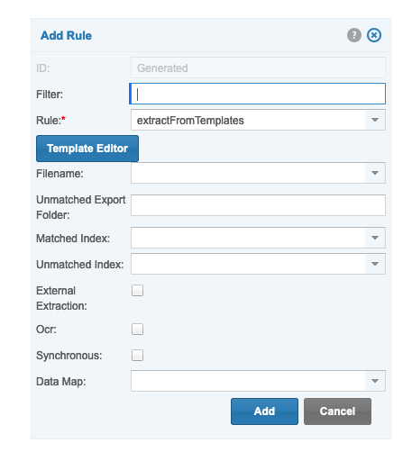

Template-less Extraction
Client Side Configuration
Setup the following 3 properties under Remote Extraction Service
| Description | Property Name | Information |
|---|---|---|
Host URL |
external.extraction.host.url |
URL of the host server with extraction-services |
JWT Secret Key |
external.extraction.secret |
Auth Token |
Username |
external.extraction.user.name |
Username of an existing User to send and receive information, user must be the same name on both servers |
Rule Configuration
Following the guide: Template Extraction
Create a rule on the node

External Extraction:
- Uses remote extraction instead
Ocr:
- If ticked, extraction will include an ocr'd version of the pdf
Asynchronous:
- Off: Will post and receive feedback immediately
- Event: document.external_extraction - indicates the extraction is done
- On: Will post and await response when it is done
- Events:
- document.extraction_requested - indicates request has been sent
- document.extraction_received - indicates request has been received
- document.failed_analyzed_expenses - failed to extract
- document.external_extraction - for sync extraction process complete
- document.document_ocr_success - indicates ocr has been dropped
- Events:
Normalize Property:
- mapping file of value sets, example:
- Create in node:
System/data maps
field,index,format,expression,replacement
INVOICE_NUMBER,invoice_number,text,
INVOICE_DATE,invoice_date,date,dd/MM/yyyy
INVOICE_TOTAL,total_incl,double,"0,0.00"
ADDRESS,home_address,text,," "
ADDRESS_BLOCK,address,text,
RECEIVER_NAME,recipient,text,
CITY,city_or_town,text,,
VENDOR_VAT_NUMBER,vat_number,text,,
INVOICE_RECEIPT_DATE,invoice_date,date,dd/MM/yyyy,
Server Side Configuration
Required Properties:
aws.textract.access.key=[AccessKey]
aws.textract.secret.access.key=[SecretKey]
aws.s3.access.key=[AccessKey]
aws.s3.secret.access.key=[SecretKey]
jwt.secret=someCoolSecret
Dynamic Property:
aws.secret.*=anotherCoolSecret
Other Properties with Defaults, Can be configured if needed:
# A bucket to drop in files to convert
aws.s3.bucket=amazon-textract
aws.s3.region=us-east-1
aws.textract.timeout=30000
aws.textract.sleep.duration=1000
aws.textract.bucket=amazon-textract
aws.textract.region=us-east-1
aws.textract.region.url=https://textract.us-east-1.amazonaws.com
IMPORTANT NOTE:
Dynamic property aws.secret.* can be any secret for a user
For example:
If extraction-service is on a hosted server, it will receive requests from other servers, can be any server
each server can be configured to use its own user
If we have a remote server called 'https://egis-dev.papertrail.co.za'
Create a user called 'API Egis Dev' on BOTH servers
then on extraction service
create a property called aws.secret.api_egis_dev=anotherCoolSecret
Where anotherCoolSecret is the jwt.secret of the remote server